Mosul · 2018–2020
First place, University of Mosul sculpture — two years running
A Bachelor of Fine Arts from the University of Mosul, then the 2019 Iraqi Universities Art Competition.
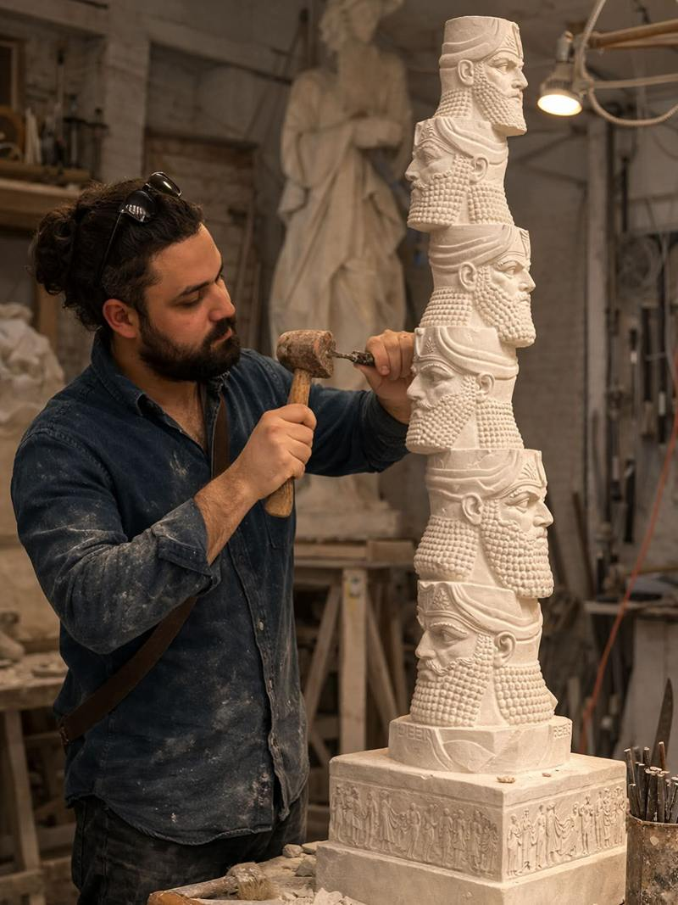
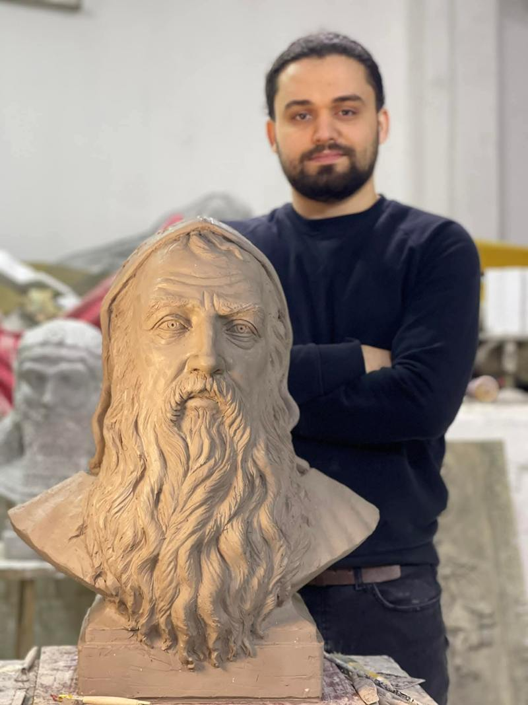
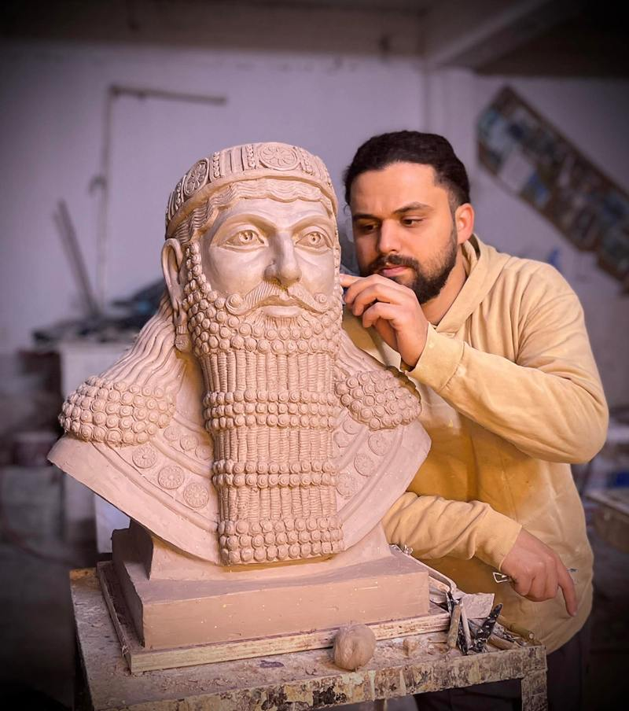
Sculptor & Painter · Bakhdida (Qaraqosh), Nineveh Plain
ܢܝܢܘܣ ܬܐܒܬ
He answered the hammers of Nimrud with a chisel — rebuilding in clay and oil what was destroyed. This is the record of that work, kept like a workshop ledger.
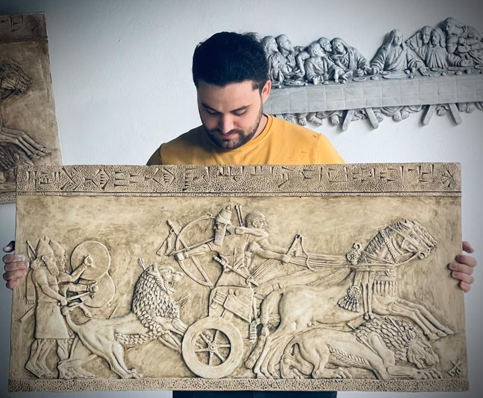
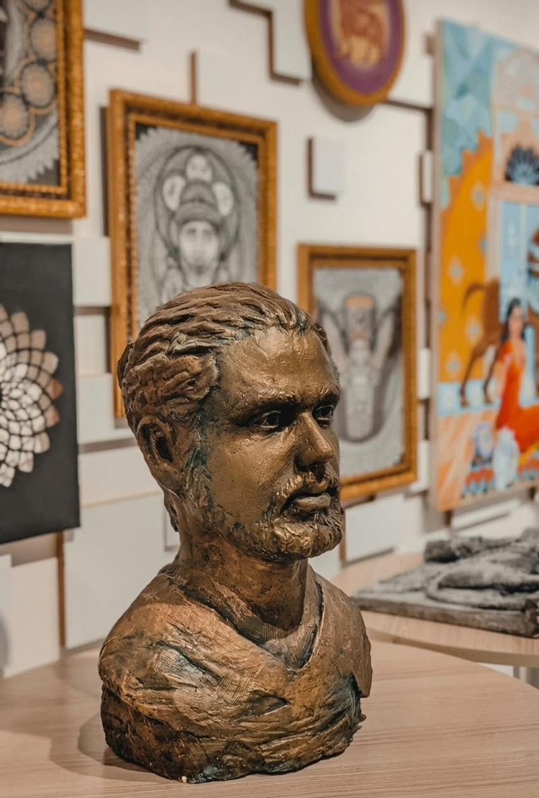
Enter the hallSculpture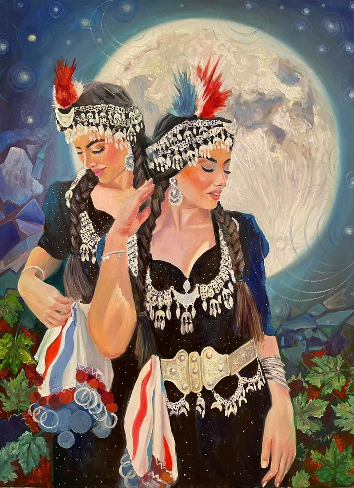
Enter the hallPaintingHall of the Chisel
Hall of the Brush
Qaraqosh → Erbil → The Nineveh Plain
The winged guardian ISIS shattered at the gates. Fifteen days of work to bring him back, beard curl by curl.
Ashurbanipal's chariot charge from the palace at Nineveh, recreated as a relief, cuneiform band and all.
The Last Supper, recreated in white relief.
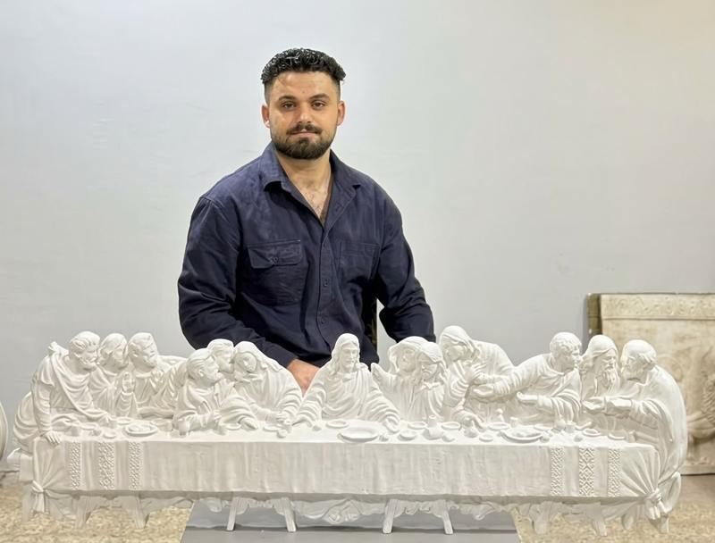
They waged a war on art and culture,
so I decided to fight them with art.
Mosul · 2018–2020
A Bachelor of Fine Arts from the University of Mosul, then the 2019 Iraqi Universities Art Competition.



United States · 2022
An Assyrian panel discussion at the Met, then exhibitions and workshops in San Jose, Modesto and Turlock with the Assyrian Arts Institute.
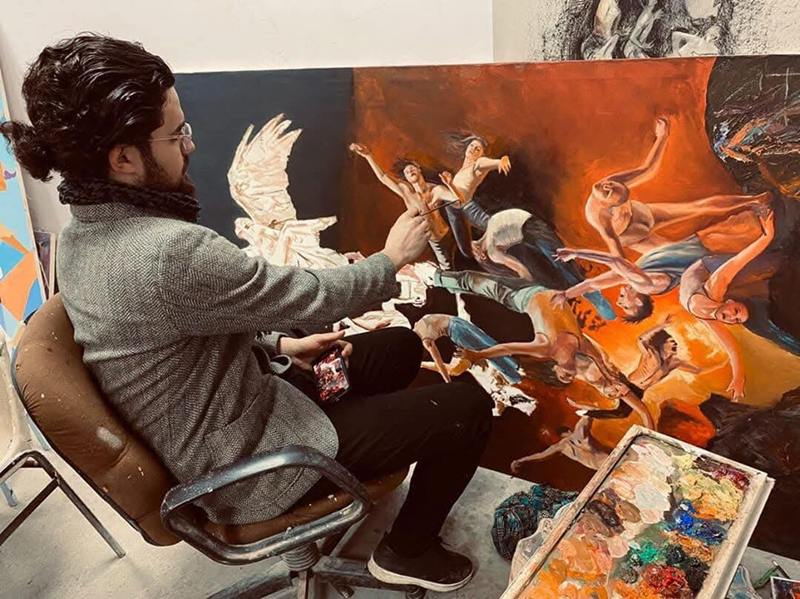
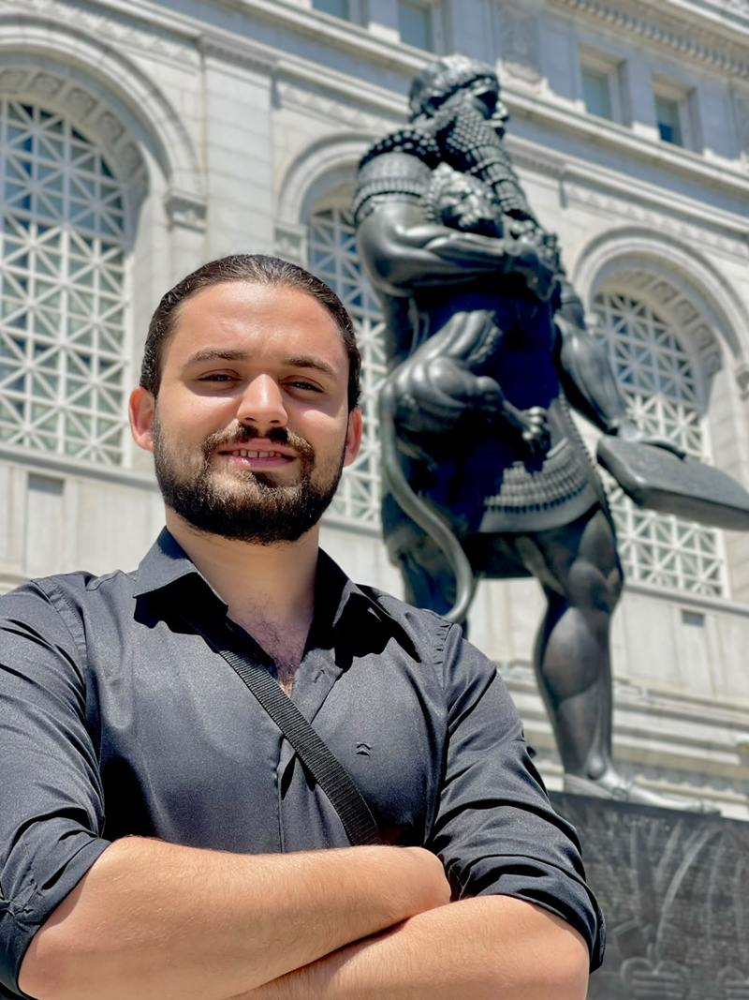
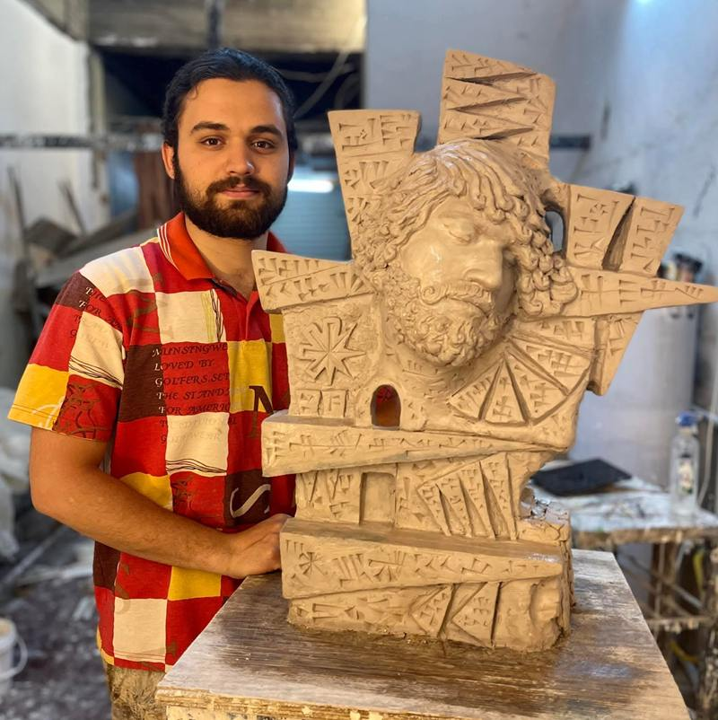
Bakhdida · With his father
The Virgin Mary above al-Tahira church, visited by Pope Francis in 2021; the Our Lady of Salvation monument in Baghdad; the girl of Umm al-Rabeein in Mosul.
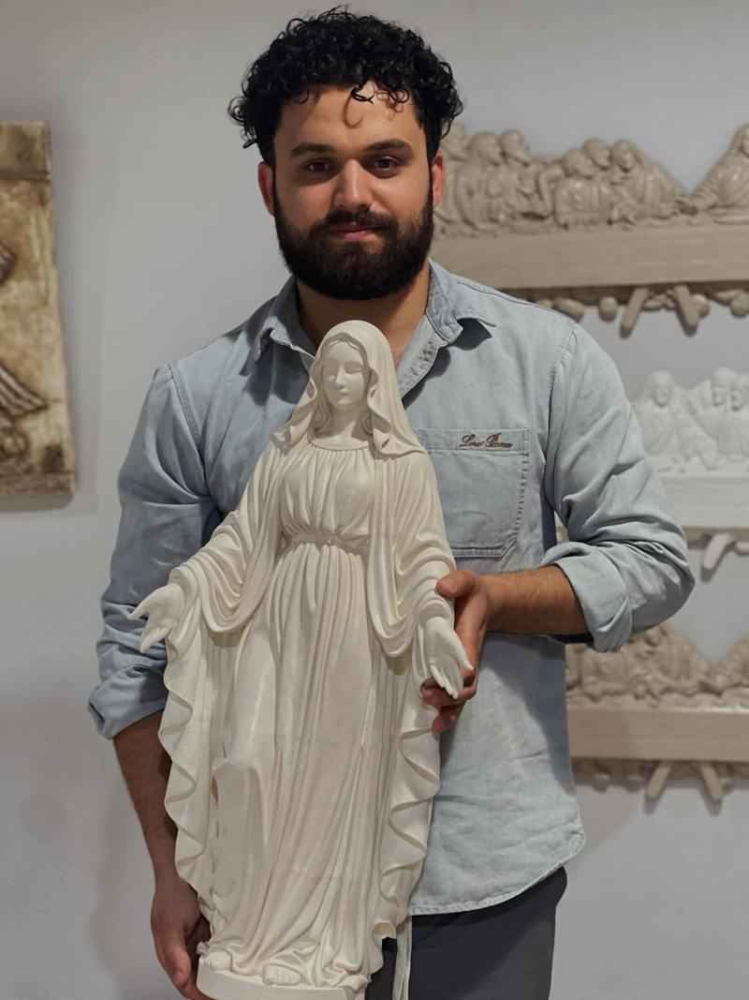
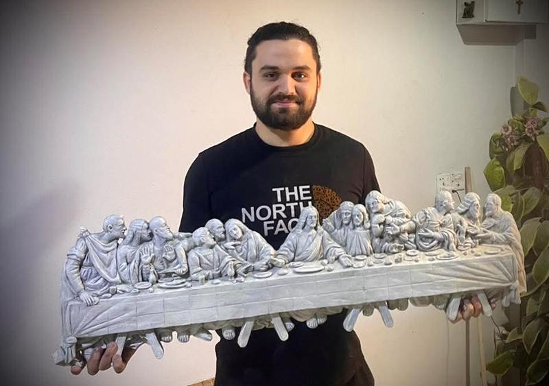
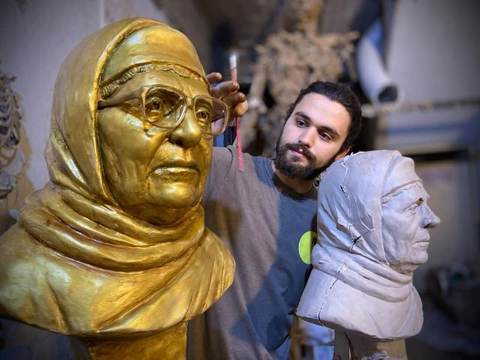
Commissions & Invitations
ܐܬܘܪ
Works travel · Originals & cast editions · Workshops for children